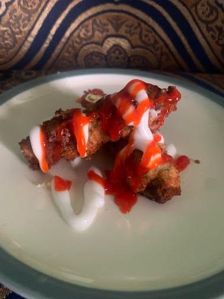
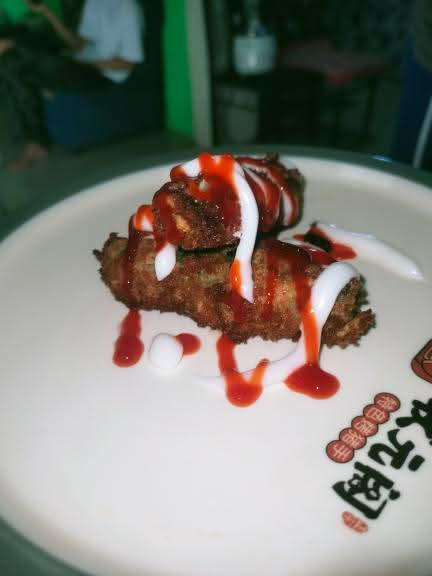
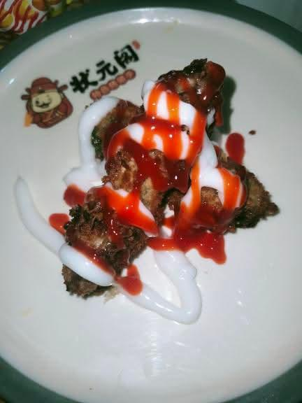

Photos of the Product



Cheese-Filled Okra
Description:
Cheese-Filled Okra is a tasty snack made fresh with okra. We remove the slimy inside part and put quickmelt cheese inside the okra. Then, we cover it in breadcrumbs and fry it until it is crispy and golden. It is a tasty way to have okra with melted cheese.
The Uniqueness of the Product:
Our Cheese-Filled Okra product is unique because it uses okra filled with melted cheese instead of the slimy part. It is then coated in breadcrumbs and fried until crispy, which gives it a crunchy outside and cheesy inside. This combination, along with tasty mayo and ketchup sauce for dipping, makes it a fun and different snack.
Ingredients:
- Okra
- ½ cup all-purpose flour
- 3 Egg
- Quickmelt Cheese
- Breadcrumbs
- Cooking oil (for frying)
- Salt and pepper (optional)
Procedure:
- Wash and steam the okra, cut tops, and slice each pod open to remove slimy parts.
- Fill each okra pod with quickmelt cheese.
- Roll the okra in all-purpose flour.
- Beat the egg and dip the floured okra in it.
- Roll the stuffed okra in breadcrumbs until fully covered.
- In a frying pan, heat enough cooking oil over medium heat.
- Carefully place the coated okra in the hot oil and fry until golden brown and crispy, about 3-5 minutes.
- Remove the fried okra and place it on paper towels to drain the excess oil.
- Enjoy your crispy Cheese-Filled Okra hot, with mayo and ketchup for dipping.
Ingredients for Mayo-Ketchup Sauce:
- Mayonnaise
- Ketchup
Procedure for Mayo-Ketchup Sauce:
- In a small bowl, mix equal parts mayonnaise and ketchup.
- Stir until well mixed.
- Taste and adjust if needed (add more mayo for creaminess or more ketchup for sweetness).
- Serve as a dipping sauce with your crispy Cheese-Filled Okra.